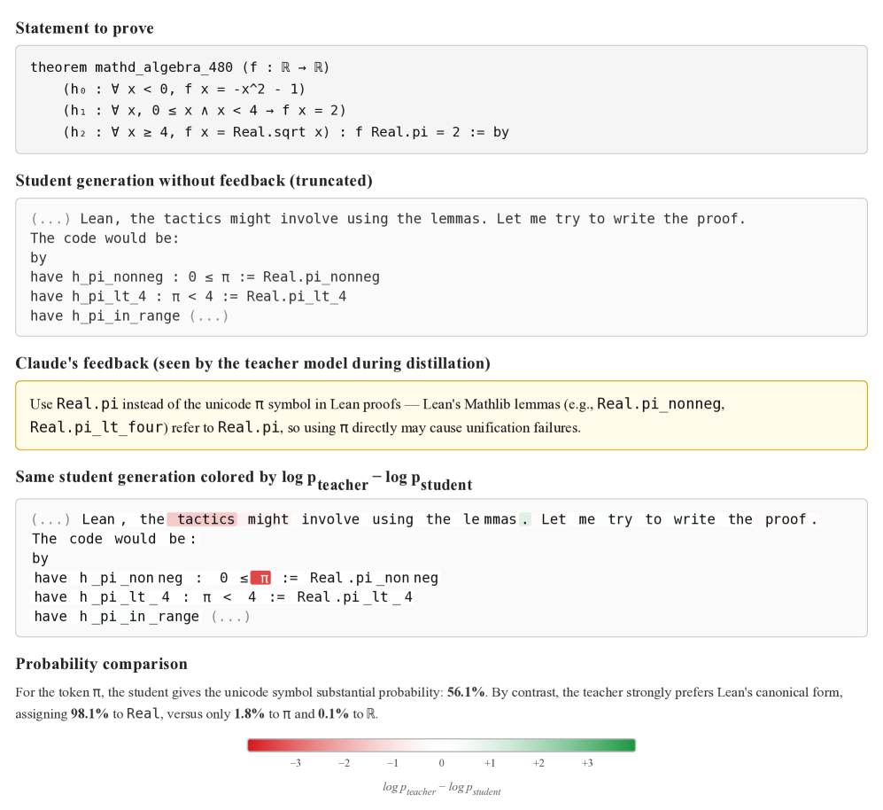
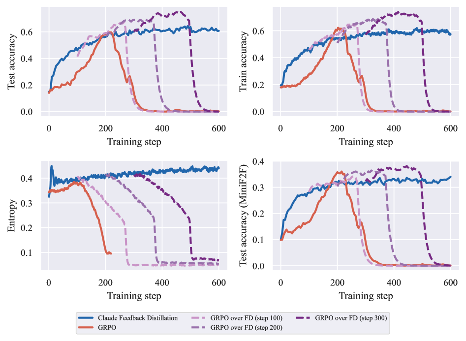

Proposes Feedback Distillation for post-training LLMs on Lean 4 theorem proving, evaluated on MiniF2F and LeanWorkbook using a Lean verifier.
Abstract
Post-training for reasoning models typically combines supervised fine-tuning with reinforcement learning from verifiable rewards, most commonly with GRPO. However, this algorithm suffers from sparse rewards, limited exploration, and mode collapse. Building upon recent works on self-distillation, we propose Feedback Distillation, a training method where the model is trained to match, at the token level, its own distribution conditioned on privileged feedback produced by a language model. Feedback Distillation offers token-level supervision and can inject external knowledge. Evaluating our method for Lean4 theorem-proving, we find that Feedback Distillation maintains greater diversity in generated trajectories than GRPO, yielding higher policy entropy and better pass@k scaling. The two methods are complementary: initializing GRPO from a Feedback Distillation checkpoint outperforms either method alone. All in all, our results suggest a promising avenue to improve post-training for complex reasoning.
Problem
Post-training of reasoning models with GRPO suffers from sparse rewards, limited exploration, and mode collapse. In Lean 4 theorem proving, where the search space includes over 300,000 Mathlib declarations, these limitations are especially severe for models starting with low proficiency.
Approach
The authors propose Feedback Distillation, a self-distillation method where the model is trained to match, at the token level, its own distribution conditioned on privileged feedback from an LLM (e.g., Claude). The teacher is an EMA-updated copy of the student that receives textual feedback on the student's proof attempt. The loss is a per-token KL divergence between teacher and student distributions along student-sampled trajectories. The method is evaluated in a Lean 4 environment with tool-use (file writing, compilation, Mathlib regex search).

Figure 1: Example of Feedback Distillation on a Lean statement from the MiniF2F dataset (Zheng et al. , 2022 ) , with Qwen3-8B as the student. Claude provides feedback on the student’s attempt. The student’s answer is then colored token-by-token by \log p_{\text{teacher}}-\log p_{\text{student}} : green tokens are preferred by the teacher, red tokens by the student, and white tokens are assigned r
Results
Feedback Distillation maintains higher policy entropy and discovers Mathlib lemmas faster than GRPO. Initializing GRPO from a Feedback Distillation checkpoint outperforms either method alone. On MiniF2F, the combined pipeline achieves the best accuracy, and pass@k scaling is improved due to greater trajectory diversity.

Figure 2: Test accuracy, train accuracy, policy entropy, and MiniF2F accuracy for Claude Feedback Distillation, GRPO, and GRPO initialized from three different checkpoints from Claude Feedback Distillation. GRPO over Feedback Distillation outperforms either method alone.